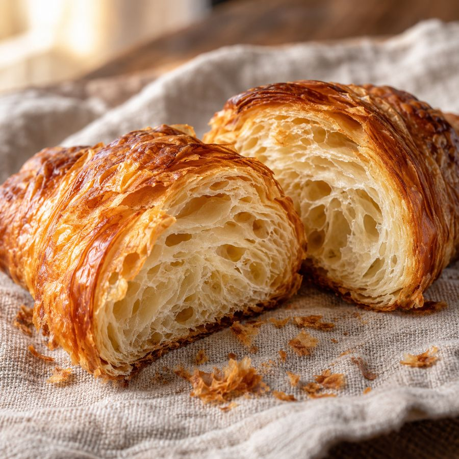
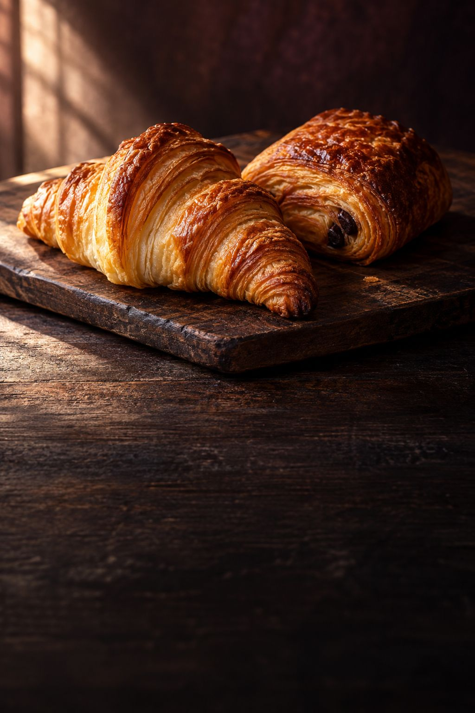
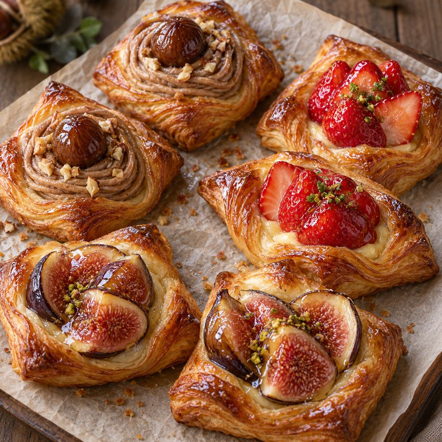
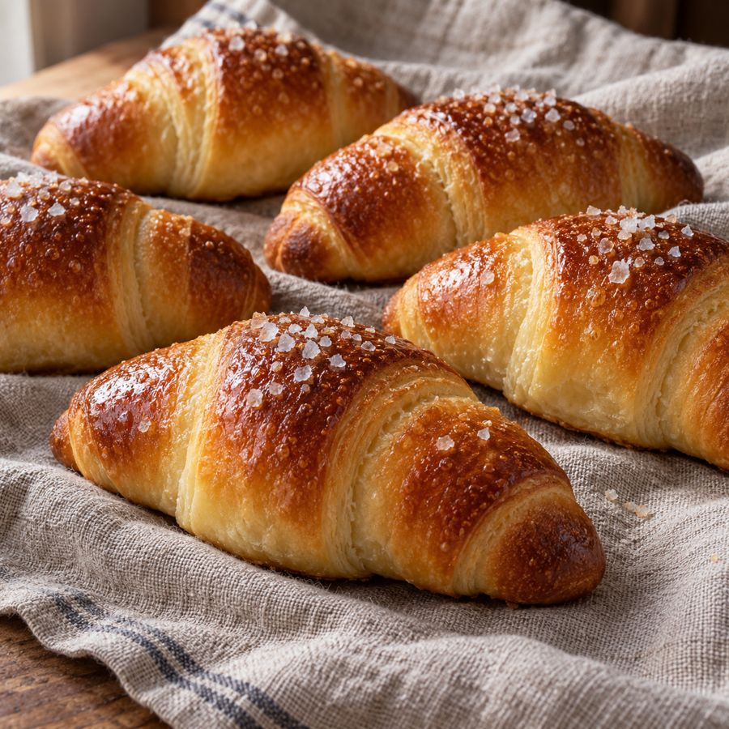
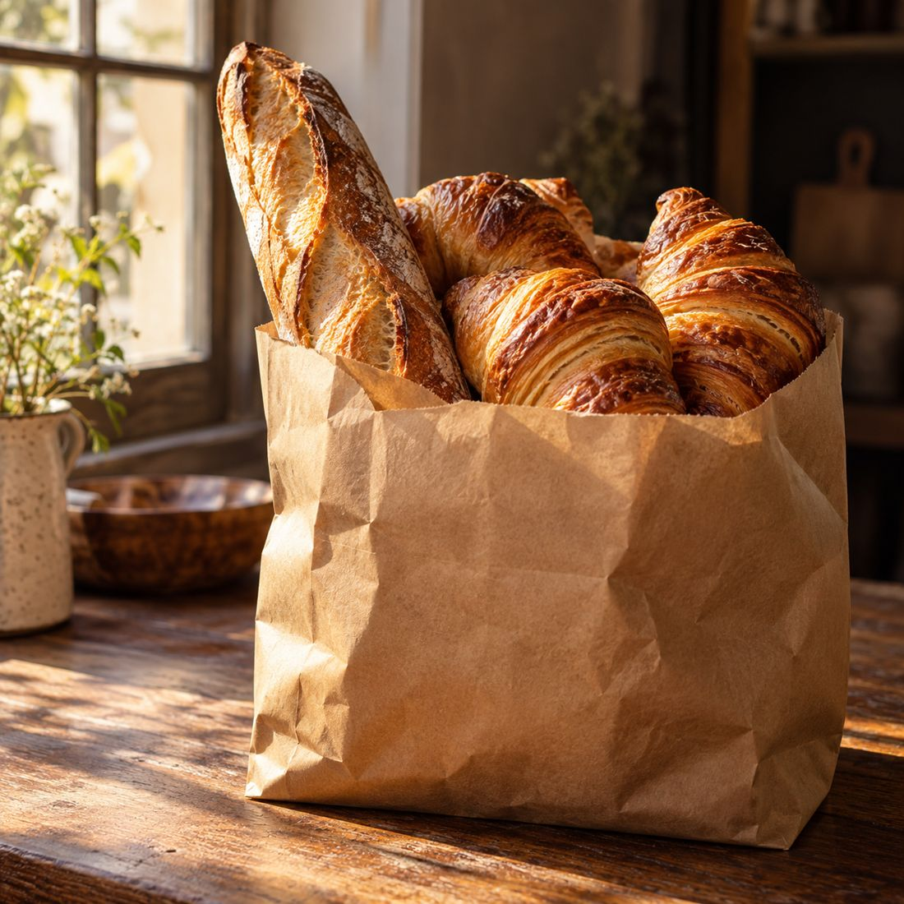

イメージCroissant
クロワッサン
外はパリパリ、バターの香りは自然。口コミでいちばん名前が挙がるパン。

Boulangerie ／ 千葉市中央区花輪町
口コミに並ぶのは パリパリ
ザクザク
バターの風味が自然
という言葉。住宅街の一軒家のような小さなお店で、層の立つクロワッサンと季節のデニッシュを焼いています。
いちばん品数が多い時間。お目当てのパンがある日は、この時間を目安に。
※平日の目安です（口コミにある店員さんのお話より）。実際の焼き上がり時間に差し替えます。
季節の商品は実際のラインナップに差し替えます

イメージCroissant
外はパリパリ、バターの香りは自然。口コミでいちばん名前が挙がるパン。

イメージDanoise
和栗、スイートポテト、いちご。季節で変わる、ケーキのようなひと品。
Pain au curry
薄い生地をじっくり揚げてザクザクに。大きなチキン入り。

イメージSel & beurre
底はカリッと、塩味はしっかり。食べやすい大きさ。
※Googleの口コミで名前が挙がったパンから選んでいます。写真はすべてイメージです。
営業日・時間はGoogleマップの情報（2026年9月）

写真はイメージです臨時のお休みは Instagram でお知らせします。
取り置きの可否と方法（電話・Instagram の DM など）を、お店のルールに合わせて書きます。
使える支払い方法を、実際の内容に合わせて書きます。
営業中も追加で焼き上がりますが、午後は品数が少なくなります。種類を選びたい方はお昼前がおすすめです。
お店の前に2台と、少し先に第2駐車場があります。住宅街の中なので、ゆっくり走ってお越しください。
その日のパン、季節の新作、臨時のお休みをお知らせしています。